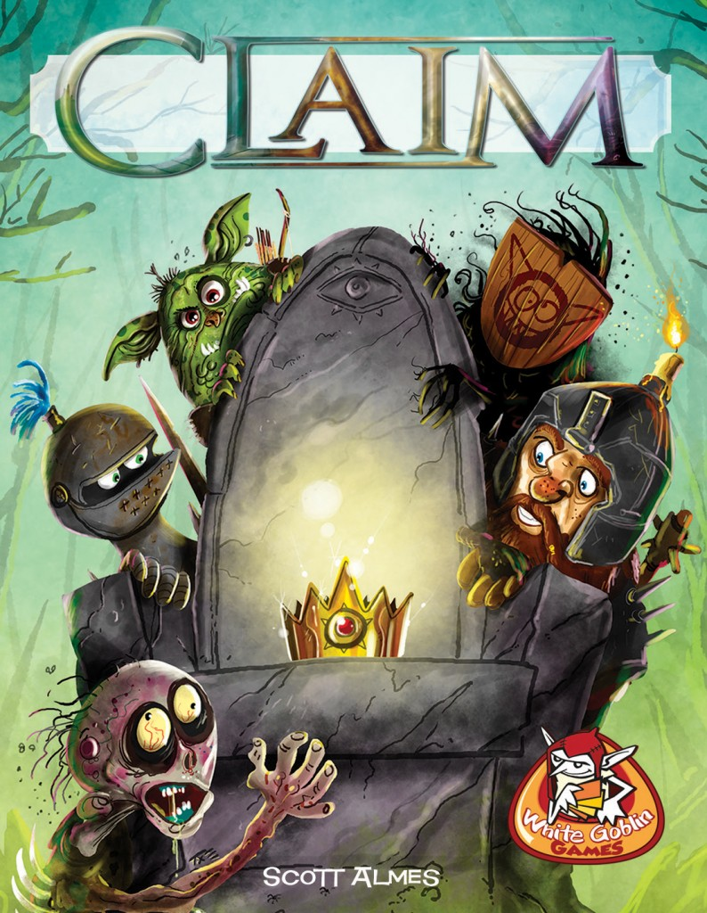

Claim

PROJECT PMD (3° SEMESTER)
-
General function: 2 rounds (1° build army, 2° fight to claim the throne), 5 clans
(goblins, dwarfs, dopplegangers, knights and necromancers), 13 cards for each
round.
-
Develop on C
-
1 - 2 players (P1 vs CPU/P1 vs P2)
-
Uploaded in github during the development as a private repository
https://github.com/josepvazquezp/claim_interfaz
Home